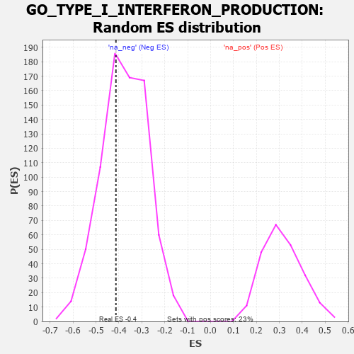

| | | Dataset | 7d |
| Phenotype | NoPhenotypeAvailable |
| Upregulated in class | na_neg |
| GeneSet | GO_TYPE_I_INTERFERON_PRODUCTION |
| Enrichment Score (ES) | -0.4129275 |
| Normalized Enrichment Score (NES) | -1.1017087 |
| Nominal p-value | 0.3492885 |
| FDR q-value | 0.74412507 |
| FWER p-Value | 1.0 |
Table: GSEA Results Summary
 Fig 1: Enrichment plot: GO_TYPE_I_INTERFERON_PRODUCTION
Fig 1: Enrichment plot: GO_TYPE_I_INTERFERON_PRODUCTION
Profile of the Running ES Score & Positions of GeneSet Members on the Rank Ordered List
| PROBE | GENE SYMBOL | GENE_TITLE | RANK IN GENE LIST | RANK METRIC SCORE | RUNNING ES | CORE ENRICHMENT | | 1 | DHX33 | | | 605 | 0.593 | -0.0318 | No |
| 2 | MRE11 | | | 693 | 0.560 | -0.0009 | No |
| 3 | XRCC6 | | | 694 | 0.560 | 0.0410 | No |
| 4 | HMGB2 | | | 892 | 0.507 | 0.0542 | No |
| 5 | SYK | | | 2186 | 0.278 | -0.0878 | No |
| 6 | OTUD5 | | | 2385 | 0.247 | -0.0942 | No |
| 7 | DDX3X | | | 3388 | 0.091 | -0.2136 | No |
| 8 | TRAIP | | | 3408 | 0.088 | -0.2093 | No |
| 9 | PQBP1 | | | 3526 | 0.072 | -0.2187 | No |
| 10 | PIN1 | | | 3543 | 0.069 | -0.2155 | No |
| 11 | DHX9 | | | 3693 | 0.044 | -0.2310 | No |
| 12 | IFIH1 | | | 3919 | 0.006 | -0.2589 | No |
| 13 | DDX58 | | | 3998 | -0.007 | -0.2681 | No |
| 14 | SETD2 | | | 4443 | -0.084 | -0.3178 | No |
| 15 | EP300 | | | 4941 | -0.186 | -0.3664 | No |
| 16 | XRCC5 | | | 4946 | -0.187 | -0.3529 | No |
| 17 | PRKDC | | | 4955 | -0.189 | -0.3398 | No |
| 18 | DDX41 | | | 5058 | -0.211 | -0.3368 | No |
| 19 | PPM1B | | | 5422 | -0.300 | -0.3601 | No |
| 20 | PCBP2 | | | 5539 | -0.331 | -0.3500 | No |
| 21 | TLR2 | | | 5761 | -0.395 | -0.3482 | No |
| 22 | FLOT1 | | | 6276 | -0.564 | -0.3708 | Yes |
| 23 | ISG15 | | | 6385 | -0.608 | -0.3389 | Yes |
| 24 | PTPRS | | | 6646 | -0.738 | -0.3164 | Yes |
| 25 | UFD1 | | | 7157 | -1.040 | -0.3029 | Yes |
| 26 | CYLD | | | 7333 | -1.206 | -0.2347 | Yes |
| 27 | NLRC3 | | | 7574 | -1.515 | -0.1517 | Yes |
| 28 | TRAF3 | | | 7886 | -2.695 | 0.0107 | Yes |
Table: GSEA details [plain text format]

Fig 2: GO_TYPE_I_INTERFERON_PRODUCTION: Random ES distribution
Gene set null distribution of ES for GO_TYPE_I_INTERFERON_PRODUCTION